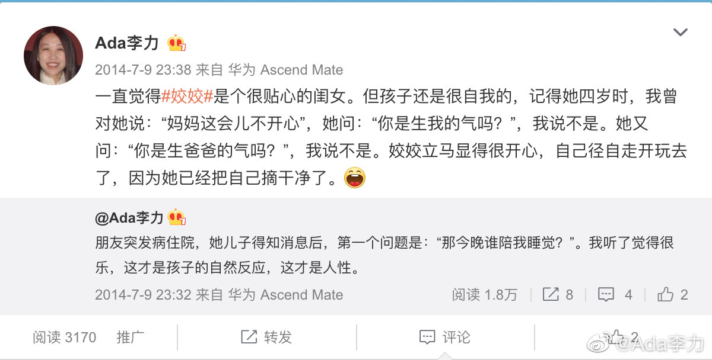

#不明所以#
记得以前发过个帖子，我认为孩子先想到自己的需求，而不考虑父母，是天性，是人性。记得评论里被骂了，当然，我也把那个人拉黑了。
现在想起来，我也曾有过不切实际的想法，希望年幼的孩子，能察觉到我的情绪，并且能给予安慰和回应。但是，试图这么做的父母，其实都是巨婴。
记得以前发过个帖子，我认为孩子先想到自己的需求，而不考虑父母，是天性，是人性。记得评论里被骂了，当然，我也把那个人拉黑了。
现在想起来，我也曾有过不切实际的想法，希望年幼的孩子，能察觉到我的情绪，并且能给予安慰和回应。但是，试图这么做的父母，其实都是巨婴。
- 